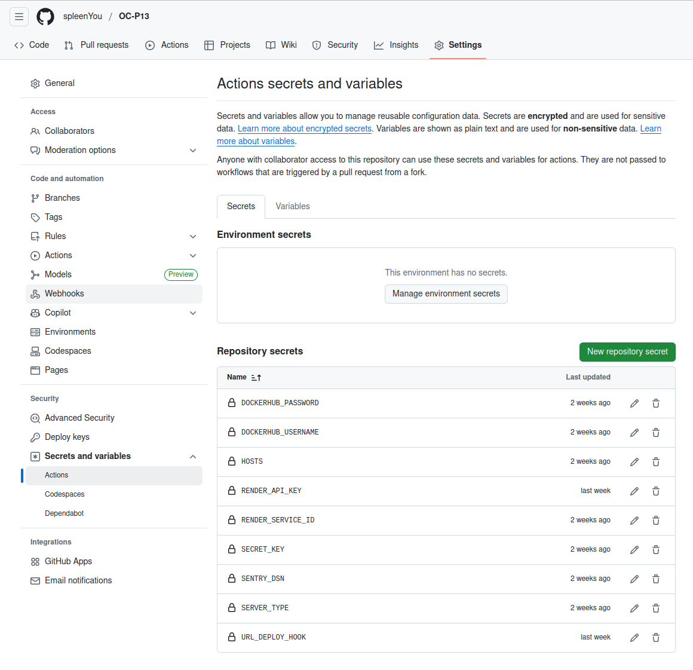
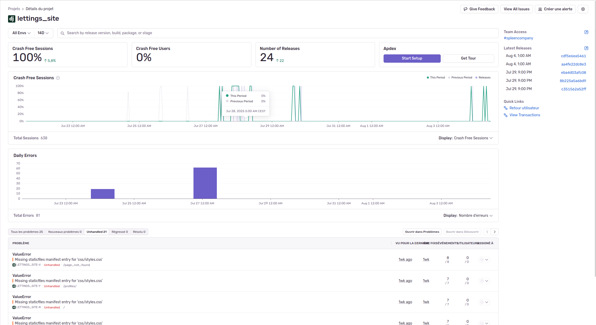

Déploiement et gestion
Le déploiement du projet se déclenche automatiquement à partir d’une modification du projet sur Github via un workflow Github Actions.
Seul la première étape sera exécutée sur toutes les branches, les deux autres ne le seront que sur la branche “master”.
Ce workflow va effectuer trois étapes (test, build et deploy) permettant de s’assurer que le code est suffisamment fonctionnel pour créer une image sur le hub Docker et la déployer sur Render.
Pré-requis
Afin de fonctionner correctement, certains éléments sont obligatoires afin de préparer un environnement et ses variables pour le projet.
Sentry
Le projet utilise Sentry pour le suivi des exceptions et des erreurs.
Si vous n’avez pas créer de projet sur Sentry :
Aller sur Sentry
Créer un compte si besoin
Cliquer sur “Créer un projet”
Choisir les éléments suivants :
Plateforme : Django
Règler la fréquence des alertes selon vos préférences
Donner un nom à votre projet
Dans Configure SDK, copier le dsn indiqué (exemple: https://176…63e@o450…732.ingest.de.sentry.io/450…160)
le DSN est également dans les paramêtres du projet/SDK Setup/Clés clients(DSN).
Clé secrète
Django utilise une clé secrète pour la signature cryptographique des données.
Si vous n’avez pas définit de clé secrète, il est existe un générateur pour cela
Variables d’environnement
Voici les variables d’environnement dont le projet à besoin :
Variable |
Description |
Exemple |
|---|---|---|
SERVER_TYPE |
Définit le type de serveur |
|
HOSTS |
Adresses du serveur (PROD) |
localhost,127.0.0.1 |
SECRET_KEY |
Clé utilisée par Django pour la cryptographie |
SuperCleSecrete123456789ABCDEF |
SENTRY_DSN |
DSN fourni par Sentry pour le suivi des logs |
Ces variables d’environnement doivent être configurées dans Github (projet > Settings > Security > Secrets and variables > Actions>*Repository secrets*)
{kind=link}
Workflow Github Actions
Afin qu’un workflow GitHub Actions, le projet a un fichier main.yaml dans .github/workflows
Le workflow du projet se décompose en trois étapes, chaque étapes dépend de la réussite de celle d’avant :
Test et linting : Github va créer un environnement pour vérifier le linting du code et effectuer les tests définis dans les fichiers tests.py et s’assurer de tester au minimum 80% du code.
Compiler et envoyer : Github va créer deux images Docker (une avec le tag git_commit et une avec le tag latest pour le déploiement) et les poussent sur le hub Docker.
Déploiement : Gihtub va mettre à jour les variables d’environnements nécessaires pour le fonctionnement du projet et demande à Render d’aller chercher la dernière image Docker (latest).
Supervision
Afin de s’assurer du bon fonctionnement du projet, Sentry récupère les erreurs générées afin que nous puissions suivre et améliorer le projet.
{kind=link}